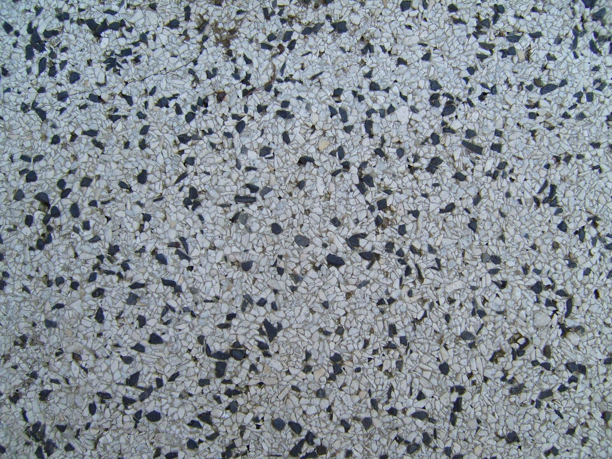

Stone surface texture
Close-up stone surfaces for the common relief pass (stone/finish.py: stone_relief, design: docs/design/stone-surface-texture.html). Source: Wikimedia Commons.
6 photos. Click a photo to view it large; arrow keys step through.



Notes from the collection
The binding truths, plus the measured official-floor statistics, are in the design doc: stone relief is a CALM PLATEAU CARVED DOWNWARD (skew ≈ −1), with essentially no relief power below 2 mm wavelength.